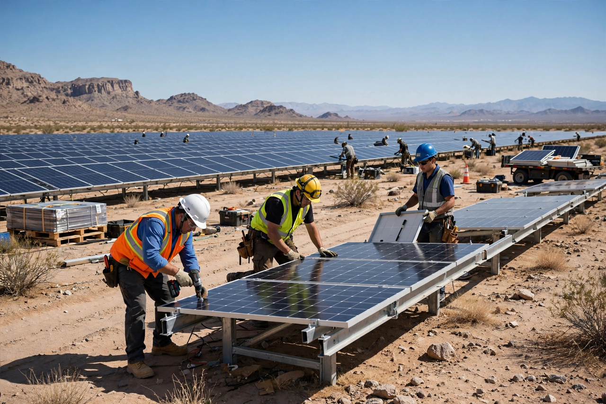

Climate change mitigation

Climate change mitigation comprises the actions that limit the magnitude of Climate change itself — above all, cutting emissions of greenhouse gases and enhancing the sinks that remove them — as distinct from adaptation, which manages the impacts of the change that occurs.
Every tonne of emissions avoided is a permanent contribution: because warming from carbon dioxide is roughly proportional to cumulative emissions, stabilising temperatures ultimately requires net emissions to reach zero.
Main strategies
Decarbonising energy is the core: replacing coal (first) and then oil and gas with {L('Renewable_energy')}, {L('Nuclear_power')} and storage; electrifying transport, heating and industry; and cutting energy demand through efficiency and design. Non-CO₂ gases matter too — methane from energy, agriculture and waste; nitrous oxide from fertiliser; fluorinated gases from refrigeration.
Land strategies protect and restore carbon stores: halting {L('Deforestation')}, reforestation, better soil management. Engineered carbon dioxide removal (from afforestation to direct air capture with storage) appears in most deep-mitigation scenarios for residual emissions, though at present it operates at very small scale.
Economics and politics
Assessment by the IPCC finds that options costing little or even saving money — solar, wind, efficiency, methane cuts — could roughly halve global emissions by 2030 relative to recent levels, and that the costs of mitigation are small beside the damages avoided. Barriers are less technological than political: incumbent interests, infrastructure lock-in, free-riding between countries, and fairness between those who caused the problem and those who suffer it. Instruments include carbon taxes, emissions trading, standards and public investment.
See also: Climate change · Renewable energy · Carbon tax · Emissions trading · Paris Agreement · Energy policy